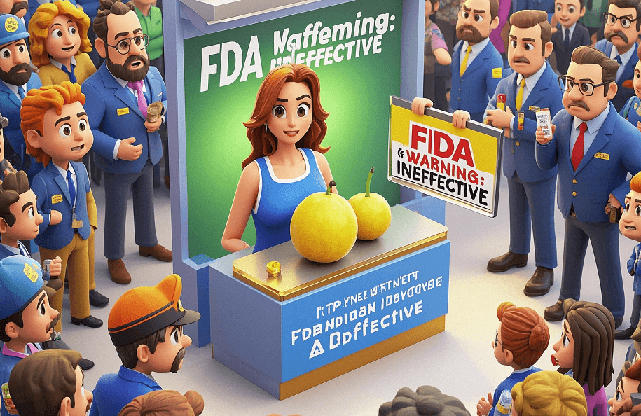

False Advertising of Internet - Famous Supplements: FDA Warns That Garcinia Cambogia Extract Is Ineffective
PeaceLove.Top Insights :2025-04-12
In modern society, internet - famous supplements have become a quick way for many people to pursue health and weight loss. These supplements often spread rapidly among consumers through social media, fitness bloggers, and celebrity endorsements. However, many supplements have not been scientifically verified, and some even involve false advertising, seriously misleading consumers and potentially causing harm to health. Among them, Garcinia Cambogia Extract is a typical example. It was once widely promoted on the internet as a 'wonderful weight - loss magic weapon', claiming to be able to effectively suppress appetite, reduce fat storage, and thus help with rapid weight loss. Some advertisements even boasted that 'taking it will make your weight - loss journey easy and pleasant'.
🚨 FDA warning: Garcinia Cambogia is ineffective and has safety hazards
However, a recent warning issued by the U.S. Food and Drug Administration (FDA) has completely debunked the 'weight - loss myth' of Garcinia Cambogia. According to the FDA's statement, there is no reliable scientific evidence that Garcinia Cambogia Extract can effectively help with weight loss. Most of the studies on its weight - loss effect are biased, and the use of these products may cause a series of side effects. Behind the false advertising, in order to make quick profits, merchants ignore consumers' health and safety. The extract of Garcinia Cambogia has been on the market for several years through online and advertising promotion, but its weight - loss effect has not been supported by any conclusive scientific evidence.
💡 Tactics of false advertising:
1. Exaggerating effects
Merchants often use eye - catching language to promote products, emphasizing that they can quickly help consumers reach their ideal weight, while ignoring individual physical differences and the importance of a scientific diet.
2. 'Magic ingredients'
Garcinia Cambogia is packaged as a 'natural extract', making consumers think it is safer and more effective than chemical drugs. However, natural does not mean safe, and ingredients lacking scientific evidence often may bring unknown side effects.
3. Celebrity endorsements and user reviews
Through celebrity endorsements or false user reviews, they create an illusion of 'hot sales' and'significant effects' to deceive consumers into making purchase decisions.
🧠 Misconceptions about science and health:
Weight loss is not just about relying on supplements. It should be achieved through a healthy diet, moderate exercise, and sufficient sleep. These internet - famous supplements often focus people's attention on the promise of 'quick results' while ignoring a healthy lifestyle and scientific weight - loss methods. Even worse, many consumers blindly rely on these supplements, hoping to change their body shape without effort, thus ignoring their potential health risks. Supplements without scientific evidence may even burden the body and cause adverse reactions.
🛑 FDA's warning: Supplements are not a guarantee of health
The FDA's intervention is not only to protect consumers from false advertising but also to remind the public that supplements are not omnipotent and are not regulated to the same extent as drugs. In many cases, supplements may contain unlabeled ingredients, and some ingredients may interact with drugs, affecting physical health.
⚖️ How to avoid being deceived:
1. Be vigilant against exaggerated claims
Avoid believing promises like 'losing weight overnight' or 'quick and effective'. A truly healthy weight - loss method requires time and perseverance.
2. Consult reliable information
Before buying any supplement, be sure to consult evaluations and studies from professional institutions to confirm its effectiveness and safety.
3. Consult a professional doctor
If you have health problems or weight - loss needs, you should first consult a doctor or a nutritionist instead of blindly believing popular online recommendations.
4. Pay attention to FDA warnings
Keep informed about relevant warnings issued by the FDA or other regulatory agencies to avoid buying unverified products that may pose risks.
🔚 Conclusion:
Although the false advertising of Garcinia Cambogia Extract was once very popular, science and facts have finally exposed its true nature. There is no shortcut to health and weight loss. The truly effective way should be to rely on scientific and long - term lifestyle adjustments rather than believing the beautiful lies in the market. We should all learn to identify products with false advertising and exaggerated effects and choose scientifically verified methods that are beneficial to health, so as to embark on a safer and healthier life track!